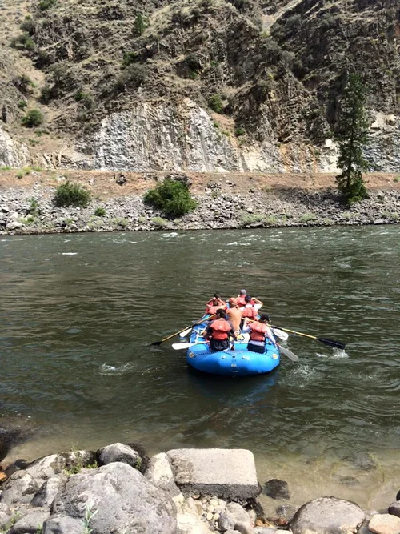

Whitewater rafting is a premier outdoor adventure company dedicated to providing unforgettable whitewater rafting experiences for all skill levels. Specializing in guided tours through some of the region's most breathtaking river canyons, the company combines adrenaline-pumping Class IV rapids with serene scenic floats. Each trip is led by certified professional guides who prioritize safety and environmental stewardship, ensuring that every guest—from first-time paddlers to seasoned thrill-seekers—enjoys a world-class journey through the heart of the wild.